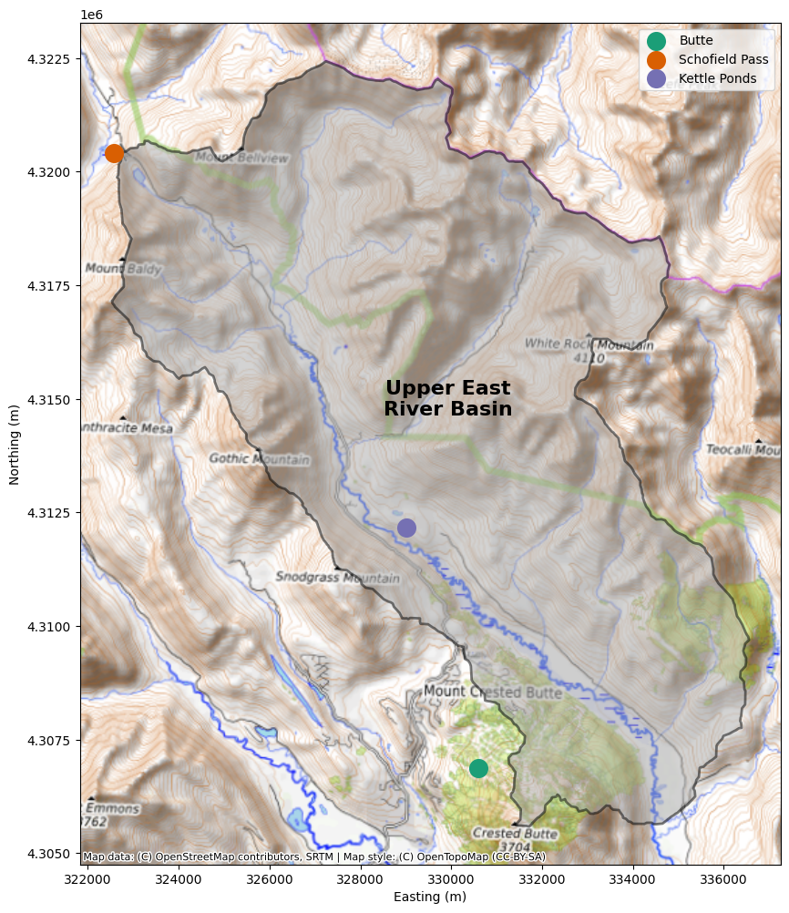
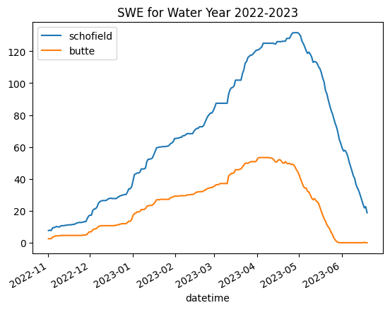
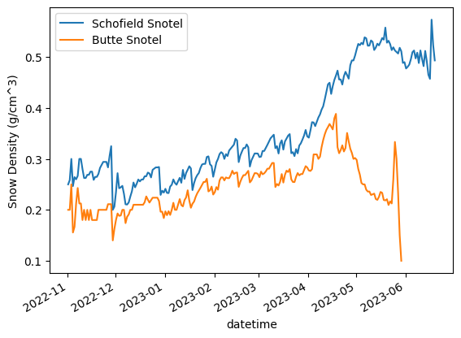

CEWA 568 Snow Hydrology - Winter 2025#
Lab 2-1: SNOTEL data from the East River Valley#
Written by Daniel Hogan - March 9, 2023
Modified by Eli Schwat in December 2024
Imports necessary for the notebook#
A few packages may need to be installed including:
contextily
geopandas
metloom
xarray
If you are working on your own computer’s python package, to install, go to the command line and type:
conda install -c conda-forge contextily geopandas metloom xarray
If you are working on the UW Jupyterhub install, you will need to install locally each time you run these sections of the notebook.
!pip install metloom
Collecting metloom
Downloading metloom-0.9.0-py2.py3-none-any.whl.metadata (9.1 kB)
Collecting geopandas<2.0.0,>=1.0.0 (from metloom)
Downloading geopandas-1.1.2-py3-none-any.whl.metadata (2.3 kB)
Requirement already satisfied: pandas<3.0.0,>=1.0.0 in /opt/hostedtoolcache/Python/3.11.14/x64/lib/python3.11/site-packages (from metloom) (2.3.3)
Collecting lxml<6.0.0,>=5.4.0 (from metloom)
Downloading lxml-5.4.0-cp311-cp311-manylinux_2_28_x86_64.whl.metadata (3.5 kB)
Requirement already satisfied: requests<3.0.0,>2.0.0 in /opt/hostedtoolcache/Python/3.11.14/x64/lib/python3.11/site-packages (from metloom) (2.32.5)
Requirement already satisfied: beautifulsoup4<5,>4 in /opt/hostedtoolcache/Python/3.11.14/x64/lib/python3.11/site-packages (from metloom) (4.14.3)
Collecting zeep>4.0.0 (from metloom)
Downloading zeep-4.3.2-py3-none-any.whl.metadata (4.4 kB)
Collecting pydash<9.0.0,>=8.0.0 (from metloom)
Downloading pydash-8.0.6-py3-none-any.whl.metadata (3.4 kB)
Requirement already satisfied: soupsieve>=1.6.1 in /opt/hostedtoolcache/Python/3.11.14/x64/lib/python3.11/site-packages (from beautifulsoup4<5,>4->metloom) (2.8.3)
Requirement already satisfied: typing-extensions>=4.0.0 in /opt/hostedtoolcache/Python/3.11.14/x64/lib/python3.11/site-packages (from beautifulsoup4<5,>4->metloom) (4.15.0)
Requirement already satisfied: numpy>=1.24 in /opt/hostedtoolcache/Python/3.11.14/x64/lib/python3.11/site-packages (from geopandas<2.0.0,>=1.0.0->metloom) (2.4.2)
Collecting pyogrio>=0.7.2 (from geopandas<2.0.0,>=1.0.0->metloom)
Downloading pyogrio-0.12.1-cp311-cp311-manylinux_2_28_x86_64.whl.metadata (5.9 kB)
Requirement already satisfied: packaging in /opt/hostedtoolcache/Python/3.11.14/x64/lib/python3.11/site-packages (from geopandas<2.0.0,>=1.0.0->metloom) (26.0)
Requirement already satisfied: pyproj>=3.5.0 in /opt/hostedtoolcache/Python/3.11.14/x64/lib/python3.11/site-packages (from geopandas<2.0.0,>=1.0.0->metloom) (3.7.2)
Collecting shapely>=2.0.0 (from geopandas<2.0.0,>=1.0.0->metloom)
Downloading shapely-2.1.2-cp311-cp311-manylinux2014_x86_64.manylinux_2_17_x86_64.whl.metadata (6.8 kB)
Requirement already satisfied: python-dateutil>=2.8.2 in /opt/hostedtoolcache/Python/3.11.14/x64/lib/python3.11/site-packages (from pandas<3.0.0,>=1.0.0->metloom) (2.9.0.post0)
Requirement already satisfied: pytz>=2020.1 in /opt/hostedtoolcache/Python/3.11.14/x64/lib/python3.11/site-packages (from pandas<3.0.0,>=1.0.0->metloom) (2026.1.post1)
Requirement already satisfied: tzdata>=2022.7 in /opt/hostedtoolcache/Python/3.11.14/x64/lib/python3.11/site-packages (from pandas<3.0.0,>=1.0.0->metloom) (2025.3)
Requirement already satisfied: charset_normalizer<4,>=2 in /opt/hostedtoolcache/Python/3.11.14/x64/lib/python3.11/site-packages (from requests<3.0.0,>2.0.0->metloom) (3.4.4)
Requirement already satisfied: idna<4,>=2.5 in /opt/hostedtoolcache/Python/3.11.14/x64/lib/python3.11/site-packages (from requests<3.0.0,>2.0.0->metloom) (3.11)
Requirement already satisfied: urllib3<3,>=1.21.1 in /opt/hostedtoolcache/Python/3.11.14/x64/lib/python3.11/site-packages (from requests<3.0.0,>2.0.0->metloom) (2.6.3)
Requirement already satisfied: certifi>=2017.4.17 in /opt/hostedtoolcache/Python/3.11.14/x64/lib/python3.11/site-packages (from requests<3.0.0,>2.0.0->metloom) (2026.2.25)
Requirement already satisfied: six>=1.5 in /opt/hostedtoolcache/Python/3.11.14/x64/lib/python3.11/site-packages (from python-dateutil>=2.8.2->pandas<3.0.0,>=1.0.0->metloom) (1.17.0)
Requirement already satisfied: attrs>=17.2.0 in /opt/hostedtoolcache/Python/3.11.14/x64/lib/python3.11/site-packages (from zeep>4.0.0->metloom) (25.4.0)
Collecting isodate>=0.5.4 (from zeep>4.0.0->metloom)
Downloading isodate-0.7.2-py3-none-any.whl.metadata (11 kB)
Requirement already satisfied: platformdirs>=1.4.0 in /opt/hostedtoolcache/Python/3.11.14/x64/lib/python3.11/site-packages (from zeep>4.0.0->metloom) (4.9.2)
Collecting requests-toolbelt>=0.7.1 (from zeep>4.0.0->metloom)
Downloading requests_toolbelt-1.0.0-py2.py3-none-any.whl.metadata (14 kB)
Collecting requests-file>=1.5.1 (from zeep>4.0.0->metloom)
Downloading requests_file-3.0.1-py2.py3-none-any.whl.metadata (1.7 kB)
Downloading metloom-0.9.0-py2.py3-none-any.whl (64 kB)
Downloading geopandas-1.1.2-py3-none-any.whl (341 kB)
Downloading lxml-5.4.0-cp311-cp311-manylinux_2_28_x86_64.whl (4.9 MB)
?25l ━━━━━━━━━━━━━━━━━━━━━━━━━━━━━━━━━━━━━━━━ 0.0/4.9 MB ? eta -:--:--
━━━━━━━━━━━━━━━━━━━━━━━━━━━━━━━━━━━━━━━━ 4.9/4.9 MB 75.8 MB/s 0:00:00
?25hDownloading pydash-8.0.6-py3-none-any.whl (101 kB)
Downloading pyogrio-0.12.1-cp311-cp311-manylinux_2_28_x86_64.whl (32.5 MB)
?25l ━━━━━━━━━━━━━━━━━━━━━━━━━━━━━━━━━━━━━━━━ 0.0/32.5 MB ? eta -:--:--
━━━━━━━━━━━━━━━━━━━━━━━━━━━━━━━━━━━━━━━━ 32.5/32.5 MB 185.5 MB/s 0:00:00
?25h
Downloading shapely-2.1.2-cp311-cp311-manylinux2014_x86_64.manylinux_2_17_x86_64.whl (3.1 MB)
?25l ━━━━━━━━━━━━━━━━━━━━━━━━━━━━━━━━━━━━━━━━ 0.0/3.1 MB ? eta -:--:--
━━━━━━━━━━━━━━━━━━━━━━━━━━━━━━━━━━━━━━━━ 3.1/3.1 MB 228.6 MB/s 0:00:00
?25hDownloading zeep-4.3.2-py3-none-any.whl (101 kB)
Downloading isodate-0.7.2-py3-none-any.whl (22 kB)
Downloading requests_file-3.0.1-py2.py3-none-any.whl (4.5 kB)
Downloading requests_toolbelt-1.0.0-py2.py3-none-any.whl (54 kB)
Installing collected packages: shapely, pyogrio, pydash, lxml, isodate, requests-toolbelt, requests-file, zeep, geopandas, metloom
?25l
━━━━━━━━━━━━━━━━━━━━━━━━━━━━━━━━━━━━━━━━ 0/10 [shapely]
━━━━╺━━━━━━━━━━━━━━━━━━━━━━━━━━━━━━━━━━━ 1/10 [pyogrio]
━━━━╺━━━━━━━━━━━━━━━━━━━━━━━━━━━━━━━━━━━ 1/10 [pyogrio]
━━━━╺━━━━━━━━━━━━━━━━━━━━━━━━━━━━━━━━━━━ 1/10 [pyogrio]
Attempting uninstall: lxml
━━━━╺━━━━━━━━━━━━━━━━━━━━━━━━━━━━━━━━━━━ 1/10 [pyogrio]
━━━━━━━━━━━━╺━━━━━━━━━━━━━━━━━━━━━━━━━━━ 3/10 [lxml]
Found existing installation: lxml 6.0.2
━━━━━━━━━━━━╺━━━━━━━━━━━━━━━━━━━━━━━━━━━ 3/10 [lxml]
Uninstalling lxml-6.0.2:
━━━━━━━━━━━━╺━━━━━━━━━━━━━━━━━━━━━━━━━━━ 3/10 [lxml]
Successfully uninstalled lxml-6.0.2
━━━━━━━━━━━━╺━━━━━━━━━━━━━━━━━━━━━━━━━━━ 3/10 [lxml]
━━━━━━━━━━━━━━━━━━━━╺━━━━━━━━━━━━━━━━━━━ 5/10 [requests-toolbelt]
━━━━━━━━━━━━━━━━━━━━━━━━━━━━━━━━╺━━━━━━━ 8/10 [geopandas]
━━━━━━━━━━━━━━━━━━━━━━━━━━━━━━━━━━━━╺━━━ 9/10 [metloom]
━━━━━━━━━━━━━━━━━━━━━━━━━━━━━━━━━━━━━━━━ 10/10 [metloom]
?25h
Successfully installed geopandas-1.1.2 isodate-0.7.2 lxml-5.4.0 metloom-0.9.0 pydash-8.0.6 pyogrio-0.12.1 requests-file-3.0.1 requests-toolbelt-1.0.0 shapely-2.1.2 zeep-4.3.2
import xarray as xr # used for storing our data
import matplotlib.pyplot as plt
import contextily as cx # this is for plotting
import geopandas as gpd # for location information of snotel sites
import numpy as np
import pandas as pd
from datetime import datetime
import datetime as dt
from metloom.pointdata import SnotelPointData
SNOTEL sites and data within the East River Valley#
This lab will introduce you to the NRCS SNow TELemetry (SNOTEL) sites (Butte and Schofield Pass) within the East River valley near Crested Butte, CO. We will first introduce the area that we will be studying by building a basic basemap of the Upper East River valley. Then, we will pull in the SNOTEL data for Butte and Schofield Pass. Once we have this data, we’ll add in a few variables and show a plot of snow water equivalent (SWE) for your choice of SNOTEL site and water year. Let’s get started!
Introduction to the Upper East River Valley#
Let’s download data from two SNOTEL stations in the Upper East River Valley
Variables available for download include (see the SnotelVariables object here https://metloom.readthedocs.io/en/latest/api.html):
PRECIPITATION
PRECIPITATIONACCUM
RH
SNOWDEPTH
SOILMOISTURE20IN
SOILMOISTURE2IN
SOILMOISTURE4IN
SOILMOISTURE8IN
STREAMVOLUMEADJ
STREAMVOLUMEOBS
SWE
TEMP
TEMPAVG
TEMPGROUND20IN
TEMPGROUND2IN
TEMPGROUND4IN
TEMPGROUND8IN
TEMPMAX
TEMPMIN
snotel_point_butte = SnotelPointData("380:CO:SNTL", "Butte")
snotel_point_schofield = SnotelPointData("737:CO:SNTL", "Schofield Pass")
SNOTEL_VARS = [
snotel_point_butte.ALLOWED_VARIABLES.PRECIPITATION,
snotel_point_butte.ALLOWED_VARIABLES.TEMPAVG,
snotel_point_butte.ALLOWED_VARIABLES.SWE,
snotel_point_butte.ALLOWED_VARIABLES.SNOWDEPTH,
]
df_butte = snotel_point_butte.get_daily_data(
datetime(2022, 11, 1), datetime(2023, 6, 19),
SNOTEL_VARS
)
df_schofield = snotel_point_schofield.get_daily_data(
datetime(2022, 11, 1), datetime(2023, 6, 19),
SNOTEL_VARS
)
df_butte.head()
| geometry | PRECIPITATION | PRECIPITATION_units | AVG AIR TEMP | AVG AIR TEMP_units | SWE | SWE_units | SNOWDEPTH | SNOWDEPTH_units | datasource | ||
|---|---|---|---|---|---|---|---|---|---|---|---|
| datetime | site | ||||||||||
| 2022-11-01 08:00:00+00:00 | 380:CO:SNTL | POINT Z (-106.95327 38.89435 10190) | 0.1 | in | 33.80 | degF | 1.0 | in | 5.0 | in | NRCS |
| 2022-11-02 08:00:00+00:00 | 380:CO:SNTL | POINT Z (-106.95327 38.89435 10190) | 0.0 | in | 35.78 | degF | 1.0 | in | 5.0 | in | NRCS |
| 2022-11-03 08:00:00+00:00 | 380:CO:SNTL | POINT Z (-106.95327 38.89435 10190) | 0.4 | in | 25.16 | degF | 1.0 | in | 4.0 | in | NRCS |
| 2022-11-04 08:00:00+00:00 | 380:CO:SNTL | POINT Z (-106.95327 38.89435 10190) | 0.1 | in | 18.32 | degF | 1.4 | in | 9.0 | in | NRCS |
| 2022-11-05 08:00:00+00:00 | 380:CO:SNTL | POINT Z (-106.95327 38.89435 10190) | 0.2 | in | 24.62 | degF | 1.5 | in | 9.0 | in | NRCS |
from shapely.geometry import Point
# Create a dataseries for the two locations of the snotels.
# We also add in the location of Kettle Ponds manually
# Note we give it a "CRS" coordinate reference system which corresponds to the Latitude Longitude points provided in the dataframe above
snotel_loc = gpd.GeoSeries(
[
df_butte.geometry.iloc[0],
df_schofield.geometry.iloc[0],
Point(-106.972983, 38.941817, 0) # This is the location of Kettle Ponds
],
index = ['Butte', 'Schofield Pass', 'Kettle Ponds'],
crs = 'epsg:4326'
)
snotel_loc = snotel_loc.to_crs('epsg:32613')
snotel_loc
Butte POINT Z (330604.668 4306865.963 10190)
Schofield Pass POINT Z (322573.638 4320402.503 10640)
Kettle Ponds POINT Z (329008.94 4312170.815 0)
dtype: geometry
Visualize the valley with a Basemap#
(The code section below may take a minute or so to run.)
# Read in the Upper East River file
upper_east_river_polygon = gpd.read_file('./east_polygon.json')
cb_colors = ['#1b9e77','#d95f02','#7570b3']
# Initialize Figure
fig, ax = plt.subplots(figsize=(12,12))
# Plot Upper East River polygon
upper_east_river_polygon.plot(
ax=ax,
color='darkgrey',
alpha=0.5,
zorder=1,
edgecolor = 'black',
linewidth=2
)
# Plot SNTL locations
snotel_loc.iloc[:1].plot(color=cb_colors[0], markersize= 200, ax=ax, label=snotel_loc.index[0])
snotel_loc.iloc[1:2].plot(color=cb_colors[1], markersize= 200, ax=ax, label=snotel_loc.index[1])
snotel_loc.iloc[2:].plot(color=cb_colors[2], markersize= 200, ax=ax, label=snotel_loc.index[2])
# Label the Upper East River Basin
ax.text(upper_east_river_polygon.centroid.x, upper_east_river_polygon.centroid.y,
"Upper East\nRiver Basin",
fontsize=16,
fontweight='bold',
color='k',
horizontalalignment='center')
# If downloading contextily is causing issues, comment the below line out
cx.add_basemap(ax=ax, crs=upper_east_river_polygon.crs.to_string(),source=cx.providers.OpenTopoMap);
# Add legend
ax.legend()
ax.set_xlabel('Easting (m)')
ax.set_ylabel('Northing (m)')
/opt/hostedtoolcache/Python/3.11.14/x64/lib/python3.11/site-packages/matplotlib/text.py:762: FutureWarning: Calling float on a single element Series is deprecated and will raise a TypeError in the future. Use float(ser.iloc[0]) instead
posx = float(self.convert_xunits(x))
/opt/hostedtoolcache/Python/3.11.14/x64/lib/python3.11/site-packages/matplotlib/text.py:763: FutureWarning: Calling float on a single element Series is deprecated and will raise a TypeError in the future. Use float(ser.iloc[0]) instead
posy = float(self.convert_yunits(y))
Text(166.94281781498347, 0.5, 'Northing (m)')
/opt/hostedtoolcache/Python/3.11.14/x64/lib/python3.11/site-packages/matplotlib/text.py:905: FutureWarning: Calling float on a single element Series is deprecated and will raise a TypeError in the future. Use float(ser.iloc[0]) instead
x = float(self.convert_xunits(self._x))
/opt/hostedtoolcache/Python/3.11.14/x64/lib/python3.11/site-packages/matplotlib/text.py:906: FutureWarning: Calling float on a single element Series is deprecated and will raise a TypeError in the future. Use float(ser.iloc[0]) instead
y = float(self.convert_yunits(self._y))

Let’s convert units from imperial to metric units and add them as an attribute
# converting from inches to cm
df_butte['PRECIPITATION'] = df_butte['PRECIPITATION']*2.54
df_butte['SWE'] = df_butte['SWE']*2.54
df_butte['SNOWDEPTH'] = df_butte['SNOWDEPTH']*2.54
# converting from ˚F to ˚C
df_butte['AVG AIR TEMP'] = (df_butte['AVG AIR TEMP'] - 32) * 5/9
df_schofield['PRECIPITATION'] = df_schofield['PRECIPITATION']*2.54
df_schofield['SWE'] = df_schofield['SWE']*2.54
df_schofield['SNOWDEPTH'] = df_schofield['SNOWDEPTH']*2.54
df_schofield['AVG AIR TEMP'] = (df_schofield['AVG AIR TEMP'] - 32) * 5/9
Plot snow water equivalent for the water year at both stations#
df_schofield.index = df_schofield.index.droplevel(1)
df_butte.index = df_butte.index.droplevel(1)
df_schofield['SWE'].plot(label='schofield')
df_butte['SWE'].plot(label='butte')
plt.legend()
plt.title("SWE for Water Year 2022-2023")
Text(0.5, 1.0, 'SWE for Water Year 2022-2023')

swe_in_m = df_schofield['SWE']/100 # convert from cm to me
snowdepth_in_m = df_schofield['SNOWDEPTH']/100
snow_density_schofield = swe_in_m / snowdepth_in_m
swe_in_m = df_butte['SWE']/100 # convert from cm to me
snowdepth_in_m = df_butte['SNOWDEPTH']/100
snow_density_butte = swe_in_m / snowdepth_in_m
snow_density_schofield.plot(label = 'Schofield Snotel')
snow_density_butte.plot(label = 'Butte Snotel')
plt.ylabel('Snow Density (g/cm^3)')
plt.legend()
<matplotlib.legend.Legend at 0x7f79b4de7390>
